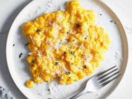

Scrambled Eggs

Description
This is a basic recipe for delicious scrambled eggs.
You may choose to add to remove specific ingredients depending on your tastes.
The most important thing is using quality eggs!
Ingredients
- 3 large eggs
- Onions
- Salt and pepper
- 2% milk
- Toast (optional)
Steps
- Cut onions
- Crack eggs into a large bowl
- Add salt and pepper to taste
- Add chopped onions
- Use a whisk to beat eggs and other ingredients together
- Add 100ml of 2% milk
- Use whisk to mix in milk
- Pour eggs into pan heated to medium
- Let eggs begin to settle around eggs
- Continously pull eggs that are setting from edges into middle
- Continuing this scrambling technique until eggs are solid
- Remove from pan and enjoy!